Trâm Anh's Digital Portfolio
Hành trình ứng dụng công nghệ số và trí tuệ nhân tạo

Trâm Anh
ULIS - VNU 🎓
Thông Tin Học Viên:
- ❀ Họ và tên: Trần Nguyễn Trâm Anh
- ❀ Mã số sinh viên: 25040461
- ❀ Trường: Đại học Ngoại ngữ - ĐHQGHN (ULIS)
- ❀ Ngành học: Ngôn ngữ và Văn hoá Anh
Lời ngỏ Portfolio:
Chào mừng bạn đến với Digital Portfolio của mình! Đây là nơi lưu giữ toàn bộ hành trình thử thách bản thân từ việc làm quen với quản lý dữ liệu máy tính cơ bản cho tới thiết kế hệ thống prompt học thuật nâng cao và triển khai các dự án truyền thông số sáng tạo. Với tư cách là một sinh viên Ngôn ngữ Anh, mình mong muốn dung hợp hài hòa tư duy nghệ thuật ngôn từ truyền thống và sức mạnh tối ưu hóa của công nghệ trí tuệ nhân tạo.
Hồ sơ kỹ thuật số này được thiết lập như một bảo tàng học thuật cá nhân, giúp ghi lại một cách khách quan toàn bộ tiến trình trang bị năng lực số trong suốt học phần. Đối với một sinh viên thuộc ngành khoa học xã hội, đây là minh chứng thực tế khẳng định nỗ lực không ngừng nghỉ để làm chủ kỹ thuật lưu trữ, tối ưu hóa câu lệnh AI và cộng tác số hóa nhóm.
1. Minh chứng kỹ năng
Trình bày trực quan, sinh động toàn bộ hệ thống sản phẩm qua các bài học từ tuần 1 đến tuần 6 của học phần môn học.
2. Số hóa học thuật
Xây dựng kho dữ liệu đám mây lưu trữ lâu dài, hỗ trợ tích cực cho các đề tài nghiên cứu ngôn ngữ học tiếp theo tại ULIS.
3. Ứng dụng AI chuẩn mực
Ghi dấu năng lực tương tác có trách nhiệm với trí tuệ nhân tạo tạo sinh theo đúng tôn chỉ liêm chính học đường.
🎯 Mục Tiêu Học Tập
Xây dựng nền tảng tư duy công nghệ vững vàng, biến các công cụ trí tuệ nhân tạo thành những cộng sự học tập đắc lực thay vì phụ thuộc thụ động.
🚀 Định Hướng Phát Triển
Kết hợp chuyên môn Ngôn ngữ học ứng dụng của ULIS với kỹ năng thiết kế truyền thông số, định hình phong cách làm việc hiện đại.
⭐ Kỷ Luật Bản Thân
Luôn tự lực tư duy độc lập trước khi tham khảo các ý kiến phản hồi từ AI nhằm duy trì văn phong nguyên bản và tư duy phản biện cá nhân.
🗂️ Danh Mục Bài Tập
Thao tác cơ bản với tệp tin và thư mục
📌 Mục tiêu bài tập:
Xây dựng kỹ năng tổ chức và cấu trúc phân cấp tệp dữ liệu máy tính logic, đặt tên tệp chuẩn hóa không dấu và làm quen các phím tắt quản trị hệ thống Windows.
💡 Bài học thu hoạch:
Đặt tên tệp không dấu và có cấu trúc rõ ràng ngăn chặn triệt để lỗi mã hóa khi đồng bộ hóa dữ liệu lên máy chủ điện toán đám mây sau này.
Sơ đồ trực quan hóa cấu trúc thư mục học tập:
Trình mô phỏng tương tác trạng thái tệp tin học tập:
// Trình giả lập Hệ thống Tệp tin ổ D:
📁 Local Disk (D:)
(Vui lòng bấm một bước bất kỳ bên trái để mô phỏng hệ thống)
Nhật ký chi tiết tiến trình 12 bước thực hiện thực tế:
Nhấn tổ hợp phím tắt Windows + E trên bàn phím để kích hoạt nhanh cửa sổ File Explorer từ màn hình nền hệ thống.
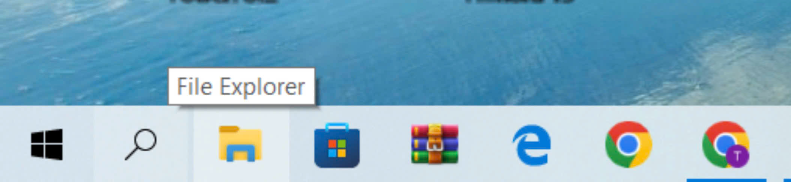
Tại khung điều hướng cây thư mục bên trái, nhấp chọn biểu tượng This PC và truy cập trực tiếp vào phân vùng ổ đĩa cục bộ Local Disk (D:).
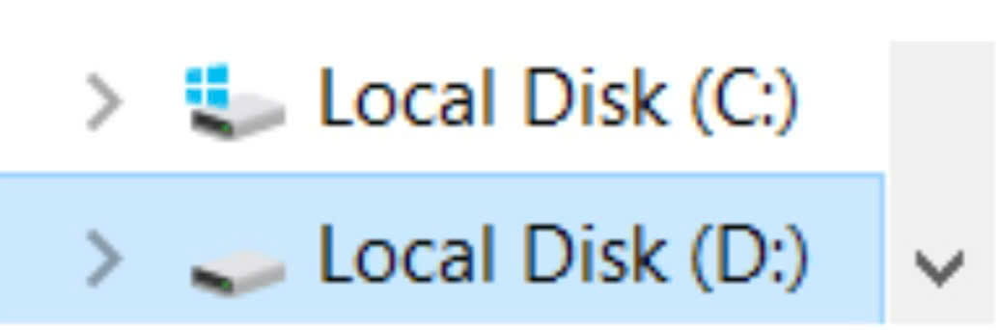
Click chuột phải vào khoảng trống nội bộ ổ D:, chọn New → Folder và khởi tạo thư mục đặt tên chuẩn là Thuchanh_TranNguyenTramAnh rồi nhấn phím Enter.
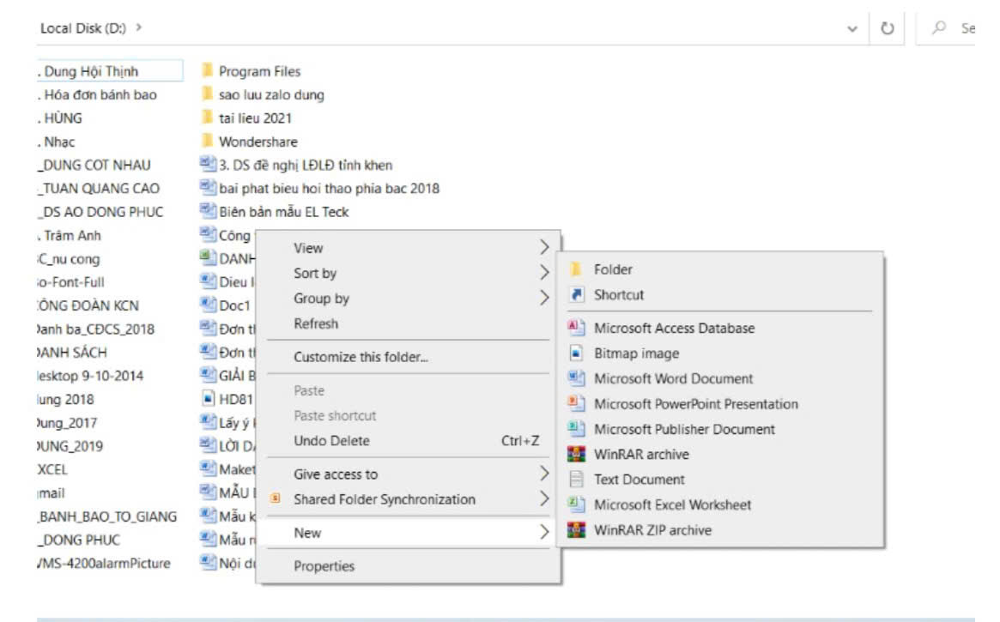
Nhấp đúp chuột trái trực tiếp trên thư mục Thuchanh_TranNguyenTramAnh vừa tạo để tiến hành mở rộng không gian làm việc bên trong.
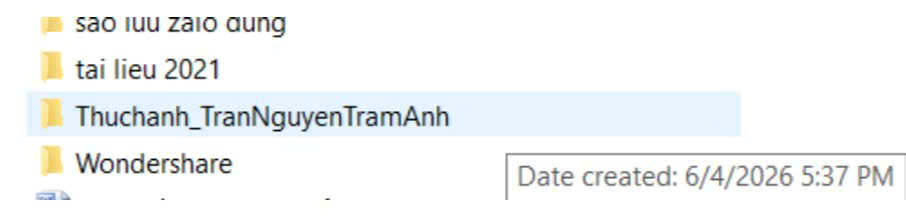
Click chuột phải vào khoảng trống nội bộ thư mục, chọn New → Text Document để thiết lập một tệp tin văn bản định dạng phẳng, đặt tên ban đầu là GhiChu.txt.
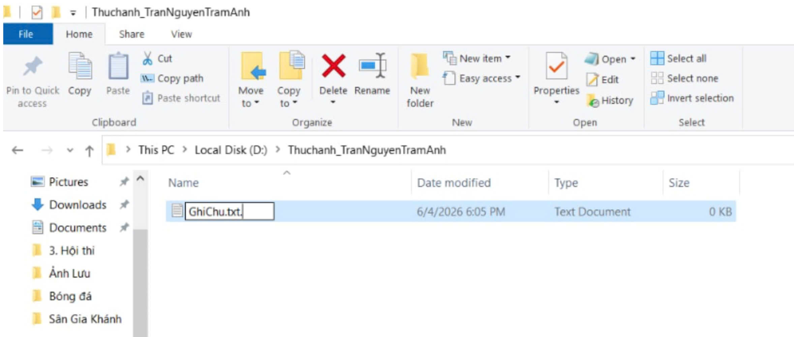
Nhấp chuột phải vào tệp GhiChu.txt, chọn Rename (hoặc dùng phím tắt F2) để thực hiện đổi tên tệp thành GhiChuQuanTrong.txt.
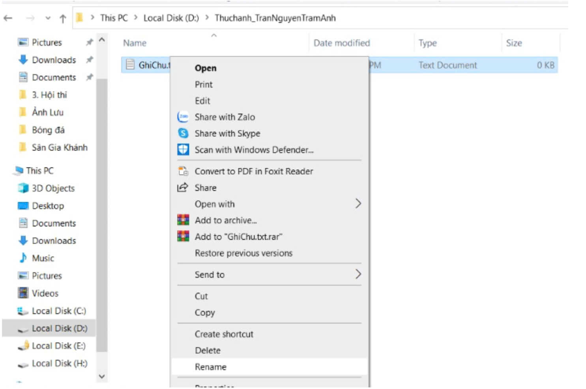
Click chuột phải trong khoảng trống nội bộ, chọn tiếp New → Folder để tạo dựng thư mục con bổ sung phân cấp nhằm quản lý dữ liệu logic và đặt tên là TaiLieu.
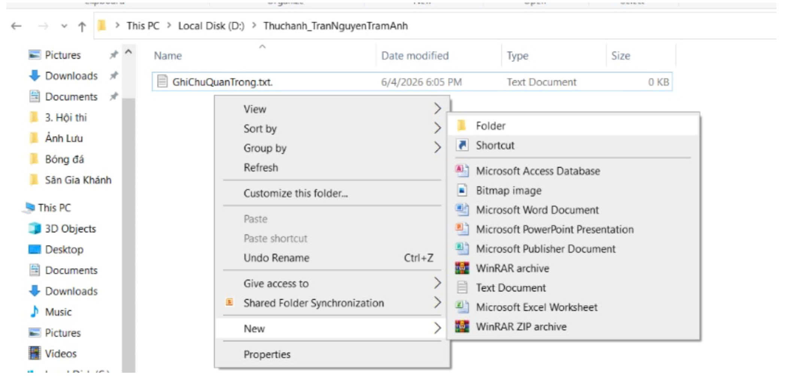
Click chuột phải vào tệp GhiChuQuanTrong.txt, chọn lệnh Copy (hoặc nhấn tổ hợp phím Ctrl + C). Sau đó mở thư mục con TaiLieu ra, nhấp chuột phải chọn lệnh Paste (hoặc phím tắt Ctrl + V) để dán tệp tin sao chép.
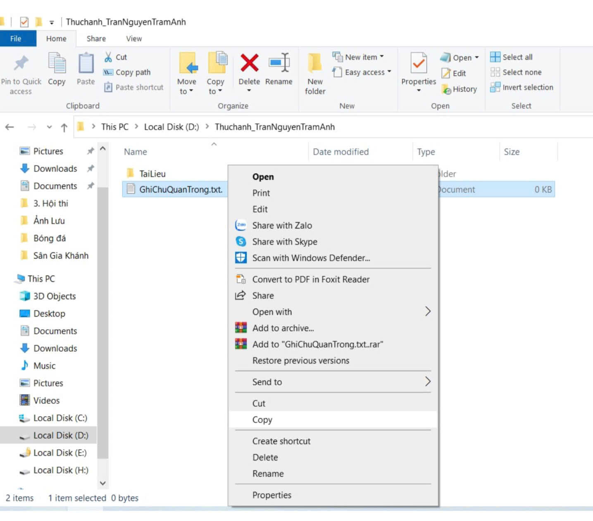
Quay lại thư mục gốc ban đầu, khởi tạo một tệp tin văn bản mới đặt tên là DiChuyen.txt. Sử dụng lệnh Cut (hoặc tổ hợp phím tắt Ctrl + X), truy cập sâu vào thư mục con TaiLieu và chọn lệnh Paste để thực hiện di dời hoàn toàn vị trí tệp tin.
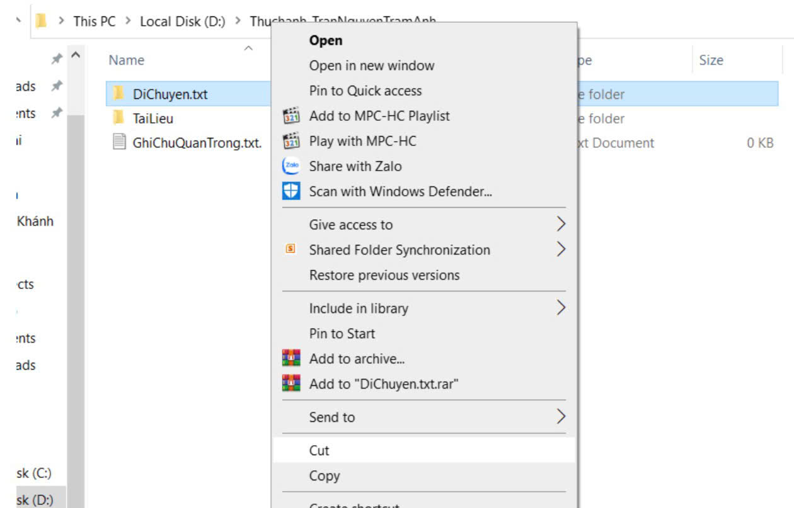
Tại không gian thư mục Thuchanh_TranNguyenTramAnh ban đầu, click chuột phải vào tệp GhiChuQuanTrong.txt chọn lệnh Delete để đưa tệp tạm thời vào Thùng rác hệ thống (Recycle Bin).
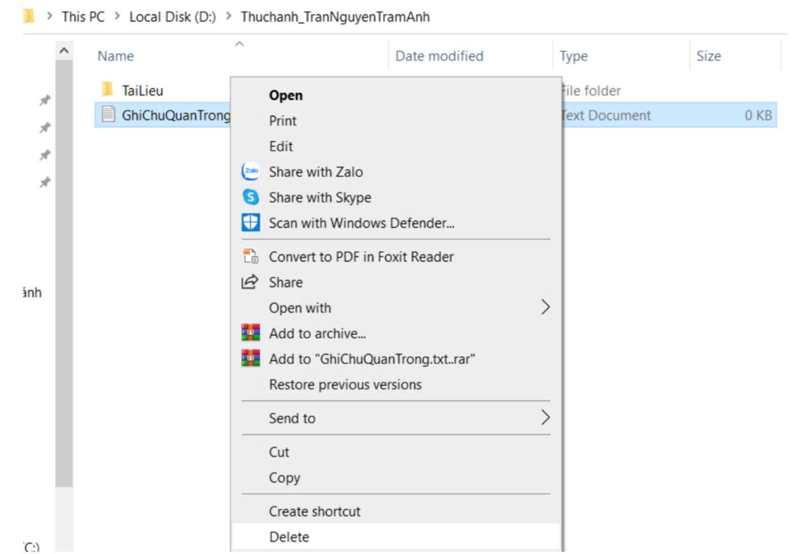
Chọn tệp tin văn bản DiChuyen.txt bên trong thư mục con, nhấn tổ hợp phím tắt nguy hiểm Shift + Delete và click xác nhận Yes trên hộp thoại cảnh báo của hệ thống Windows để xóa vĩnh viễn tệp tin khỏi ổ đĩa.
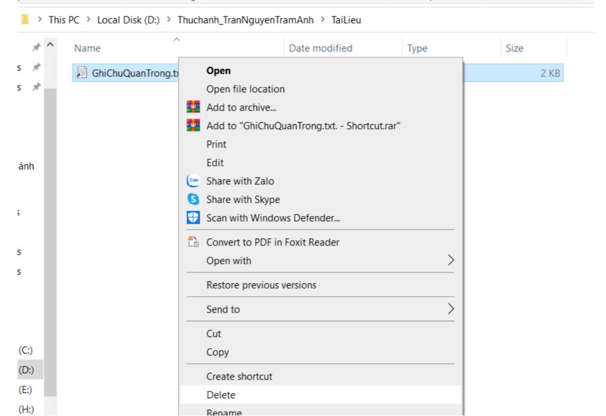
Quay trở ra màn hình Desktop, nhấp mở ứng dụng Recycle Bin. Tìm kiếm tệp tin GhiChuQuanTrong.txt bị xóa mềm lúc trước, nhấp chuột phải và chọn lệnh Restore để khôi phục tệp dữ liệu về vị trí ban đầu bên trong thư mục con.
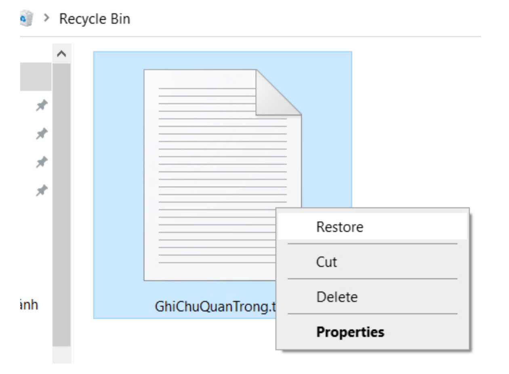
Phân tích quá trình học tập thực hành quản lý tệp:
- Thuận lợi: Giao diện File Explorer của hệ điều hành Windows trực quan, các câu lệnh phím tắt cơ bản như Ctrl+C, Ctrl+V, Ctrl+X quen thuộc giúp thực hiện thao tác nhanh chóng.
- Khó khăn: Cần rèn luyện thói quen tư duy đặt tên tệp chuẩn hóa không khoảng trắng, không dấu và cấu trúc rõ ràng thay vì thói quen đặt tên lộn xộn bừa bãi ban đầu.
- Bài học thực tiễn: Kỹ năng tổ chức hệ thống tệp chuẩn khoa học ngay từ ngày đầu đại học sẽ ngăn chặn triệt để hiện tượng thất lạc dữ liệu nghiên cứu và nâng cao năng lực lưu trữ chuyên nghiệp.
Sử dụng AI có trách nhiệm trong học tập và nghiên cứu
📌 Mục tiêu bài tập:
Nghiên cứu chính sách học thuật và tự xây dựng bộ quy tắc ứng xử trách nhiệm khi sử dụng AI trong trường đại học Ngoại ngữ (ULIS).
💡 Bài học thu hoạch:
Sự trung thực học thuật là ranh giới tối cao khẳng định uy tín và phẩm giá của một học viên thế hệ mới. Luôn khai báo sử dụng AI một cách tường tận minh bạch.
Nội dung nhiệm vụ học tập: Thiết lập một hành lang pháp lý và bộ quy tắc đạo đức ứng xử trách nhiệm khi tích hợp trí tuệ nhân tạo đồng hành học thuật tại trường đại học Ngoại ngữ (ULIS).
1. Ranh giới giữa hỗ trợ hợp lý và gian lận học thuật: Nằm ở mức độ trực tiếp tham gia của tư duy phản biện cá nhân học viên. Hỗ trợ hợp lý là khi dùng AI gợi mở ý tưởng, tối ưu văn phong học thuật, kiểm lỗi chính tả; gian lận học thuật là phó mặc hoàn toàn cho máy tự động viết luận từ A-Z mà không qua kiểm chứng độc lập.
2. Thách thức sở hữu trí tuệ: Hiện tượng ảo giác thông tin (Hallucination) do AI tự "bịa" ra tài liệu dẫn chứng, dẫn đến vi phạm nghiêm trọng tính minh bạch của đề tài khoa học thực tế.
Bộ 5 nguyên tắc ứng xử nghiêm ngặt với AI của Trâm Anh trong suốt khóa học:
1. Nguyên tắc Ý tưởng gốc: Chỉ sử dụng AI sau khi bản thân đã tự suy nghĩ và phác thảo được định hướng sơ bộ của bài tập, không bao giờ mở AI trước khi mở sách giáo trình.
2. Nguyên tắc Bộ lọc phản biện: Kiểm chứng độc lập 100% các số liệu, tài liệu tham khảo và thuật ngữ do AI cung cấp thông qua các nguồn dữ liệu chính thống uy tín.
3. Nguyên tắc Giới hạn tỷ lệ: Giới hạn mức độ đóng góp nội dung chữ của AI luôn dưới 30% khối lượng sản phẩm cuối cùng.
4. Nguyên tắc Khai báo minh bạch: Luôn luôn đính kèm phần chú thích tường tận về tên công cụ AI và mục đích sử dụng ở cuối mọi bài tập.
5. Nguyên tắc Phát triển năng lực: Sử dụng AI như một người thầy hướng dẫn giải đáp thắc mắc chuyên môn, chứ không biến AI thành một người thợ viết hộ bài tập.
Sản phẩm Infographic học thuật tóm tắt quy trình ứng xử trách nhiệm:
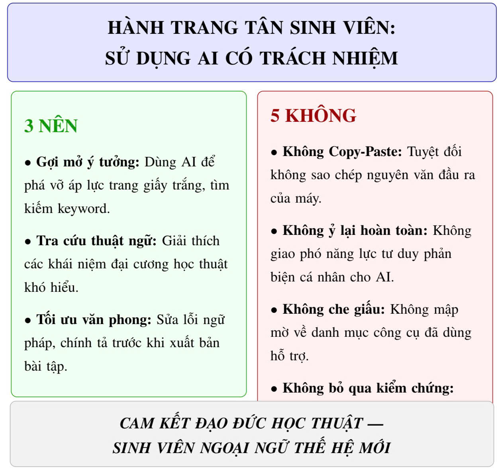
Hành trang tân sinh viên: Sử dụng AI có trách nhiệm ⚖️
Phân tích quá trình học tập thực hành sử dụng AI trách nhiệm:
- Thuận lợi: Hiểu rõ quy chế chính thống giúp bản thân tự tin khai thác tiềm năng của công nghệ một cách hợp pháp.
- Khó khăn: Cần tính kỷ luật tự giác học thuật cực kỳ cao để luôn khống chế bản thân không lạm dụng copy-paste bừa bãi khi gặp các bài luận khó.
- Bài học thực tiễn: Trí tuệ nhân tạo chỉ nên đóng vai trò là bệ phóng nâng đỡ ý tưởng, bộ óc phản biện độc lập của chính con người mới là yếu tố quyết định năng lực lâu dài.
Nhật ký bồi đắp tư duy số - Tổng kết chi tiết
Trải qua hành trình đồng hành học tập cùng học phần *"Nhập môn Công nghệ số và Ứng dụng Trí tuệ Nhân tạo"*, bản thân mình tự nhìn nhận đã có một bước chuyển mình vượt bậc về tư duy lưu trữ học thuật đám mây và kỹ năng làm việc số hóa.
- Về Thuận lợi: Môn học được cấu trúc cực kỳ khoa học, đi từ các bài tập nhỏ quản lý file hệ thống cơ bản cho tới thực hành thực chiến dự án lớn. Sự hỗ trợ từ các mô hình AI tạo sinh ngôn ngữ giúp giải phóng bớt thời gian dựng khung lý thuyết thô ráp để mình tập trung tinh chỉnh chất xám sâu sắc vào kịch bản nội dung.
- Về Khó khăn: Là một sinh viên chuyên ngành Ngôn ngữ học thuần túy của trường Đại học Ngoại ngữ (ULIS), rào cản lớn nhất của mình ban đầu là việc tư duy logic kỹ thuật để thiết lập dòng công việc, sắp xếp dữ liệu không xảy ra lỗi mã hóa, và đặc biệt là kỹ thuật viết Prompt có cấu trúc. AI có thể trả ra các dữ liệu mơ hồ, hời hợt nếu mình không rèn luyện tư duy phản biện để liên tục rà soát, kiểm chứng nguồn tin uy tín.
- Về Bài học lâu dài: Sự bùng nổ của thời đại công nghệ số không nhằm mục đích thay thế bộ óc của người học ngoại ngữ, mà là để kiểm thử năng lực cộng tác của chúng ta. Kỹ năng liêm chính học thuật, khai báo minh bạch thông tin và làm chủ trợ lý AI thông thái chính là hành trang vàng vững chắc để mình tự tin vững bước trong tương lai học tập và công tác chuyên môn sau này.
✨ Đánh giá mức độ hài lòng của bản thân với Portfolio này: ✨
Bấm số sao để ghi nhận hành trình của Trâm Anh!